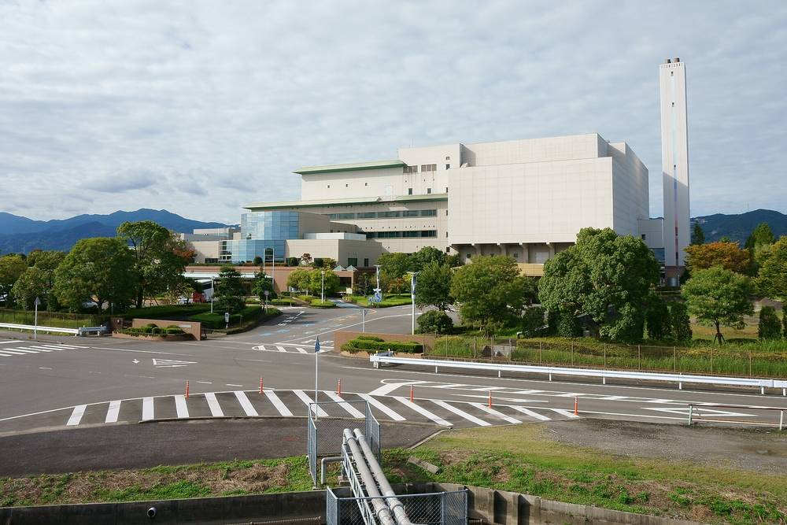

일본 사가시, 청소공장 전기 팔 지역 전력회사 세워…시 지분 52%

공공시설 113곳에 가는 연 약 1만6,000MWh를 시 출자 회사가 판매…2027년 공급 시작
일본 사가시가 시 청소공장에서 나오는 전기를 시내 공공시설에 직접 파는 지역 전력회사를 세웠다. 시와 민간 6개사가 함께 출자한 제3섹터(지자체와 민간이 같이 출자한 회사) '사가 순환에너지(さが循環エナジー)'로, 10월 30일 설립했고 11월 9일 발표했다. 자본금 5,000만 엔 가운데 시가 2,600만 엔(52%)을, 사가가스(佐賀ガス) 등 6개사가 400만 엔씩 냈다.
청소공장은 쓰레기를 태운 열로 한 해 약 3만MWh를 발전하고, 공장에서 쓰는 몫을 뺀 약 1만6,000MWh를 공공시설 113곳에 보낸다(1MWh는 1,000kWh). 지금까지는 이 전기의 판매를 시 밖 회사가 맡아 전기요금 일부가 지역 밖으로 나갔고, 새 회사가 이 전기를 시내 공공시설에 판매한다. 사장은 사업 검토 단계부터 참여한 전 부시장 이케다 가즈요시(池田一善)로, 전기사업을 바탕으로 시의 탈탄소 정책과 맞물려 지역 문제 해결에 이바지하는 기업으로 키우고 싶다는 뜻을 밝혔다(사가신문 보도). 사가신문은 공급 시작을 2027년 6월로 전했고, 공동 발표문에는 2027년도 상반기(4~9월)로 적혀 있다.
시민에너지 관점
사가시는 청소공장 전기를 공공시설에 보내면서도 판매는 시 밖 회사에 맡겨 왔고, 새 회사에서는 시가 최대 출자자로 판매를 맡는다. 공개된 출자자는 시와 민간 6개사를 합친 7곳이다.
출처: 사가신문(佐賀新聞) 2026-11-10 樋口絢乃(히구치 아야노) 기자 원문 보기
출처: 八千代エンジニヤリング(야치요엔지니어링, 출자사) 2026-11-09 보도자료 「佐賀市などと共同出資し地域新電力会社「株式会社さが循環エナジー」を設立」(설립일 2026-10-30, 자본금, 출자자, 사장 확인) 원문 보기
출처: 사가시·민간 6사 공동 발표문(PR TIMES 게재) 2026-11-16 「佐賀の電気とお金を街で循環！「さが循環エナジー」設立」(2026-11-09 설립 발표회, 시 출자 2,600만 엔 52%, 공공시설 113곳, 2027년도 상반기 공급 확인) 원문 보기